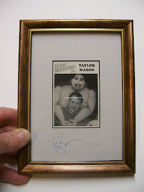

#42 Ventrilo-Card
4/1/2010
{kind=link}

Taylor Mason
Set #4; Card #4
Taylor Mason grew up in Illinois with a host of "imaginary friends." These were manifested in the form of a ventriloquist dummy, given to him by his parents on his tenth birthday.
While playing football at the University of Illinois, Taylor suffered a knee injury rendering him immobile. Glumly watching friends dance at a party, someone handed him a microphone and Taylor performed. He was soon booked up, making money as a campus entertainer. He put himself through college and graduated school doing ventriloquism and comedy.
Taylor Mason has worked at The Second City Theater in Chicago, headlined in every notable comedy club, and appeared on every major television program. He and his "right hand man", Romeo, earned "$100,000 as the Comedy Grand Champions on Star Search in 1991. Copyright, 1995 OO-LA-LA, INK.
* * * * * *
The framed and AUTOGRAPHED Taylor Mason Great Ventriloquist Collector Card pictured above has been awarded by drawing to Walter Ratzell.